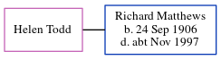

Helen Todd, the wife of Richard Algernon Matthews (the second cousin twice-removed on the father's side of Nigel Horne), and married Richard in Thanet, Kent, England around May 19291.
Citations
England & Wales Marriages 1837-2005 - Findmypast
Family Tree

Generated by ged2site. Last updated on Jun 11, 2024